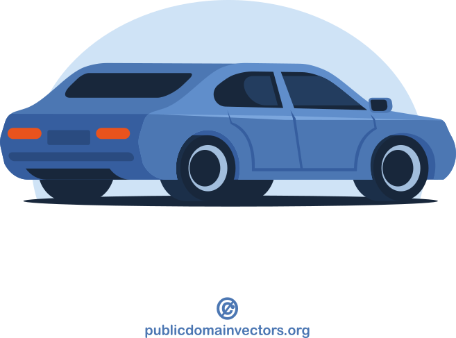
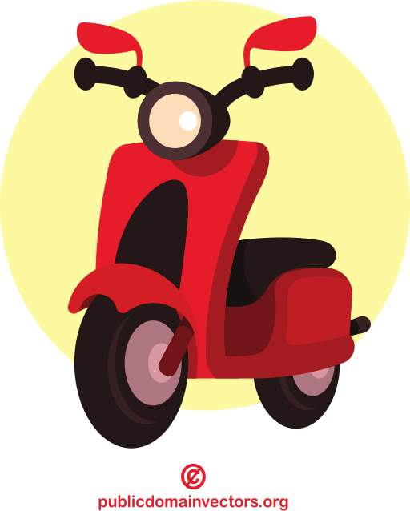

summary
gergo.pinter@uni-corvinus.hu
program is like a recipe
- executing a program is following a recipe
- programming is like creating a recipe
- software development is like running a restaurant
- come up with recipes,
- cook the food,
- ingredient logistics and preparation,
- food serving,
- marketing,
- cleaning


software development often compared to house building
- because it is an engineering discipline
- but software does not have to obey the laws of physics
- software design should focus only on the data structures and the
connection between the modules
- not the implementation details
(e.g., hardware)
- not the implementation details

software development is more like gardening
- a garden might be planned
- external factors influence the result
- weather, pests
- garden needs constant care to bloom
- sometimes also experimentation
- methods, tools
- garden is like an art (with function)

software growth
- number of lines of code is increasing
- which increases complexity
- “every line of code written comes at a price: maintenance” [1]
- larger garden, more gardening
- software development processes to handle the complexity

evolution of software life cycle models (incomplete)
- software life cycle models
- waterfall
- improved waterfall
- V model
- iterative
- agile
- waterfall
- regarding to change management

waterfall model
- sequential, rigid model
- (originally) not possible to step back to a previous phase
- testing is after the implementation, errors are found late in the process
- not possible to make changes during the development
- could take years


V model
- still rigid
- each phase has output and a review process
- errors are found at early stage
- decreases the risk of failure
- large to small: testing is done in a hierarchical perspective

iterative model
- software is built incrementally,
- with each iteration adding new features or refining existing ones
- possible to get feedback after each iteration
- can be rigid within an iteration

agile model
- continuous collaboration and fast response to change, while the iterative model takes a more gradual approach, building up the final product over multiple iterations
- scrum is an agile methodology

sprint planning
- initiates the sprint
- maximum of eight hours for a one-month sprint
- define a sprint goal
- definition of done
- it is up to the developers how to turn product backlog items into increments

sprint
- 1-4 week long
- considered a short project
- turns backlog items into increments
- includes daily scrum

sprint review
- scrum team presents the their work to the stakeholders
- increment is evaluated
- the attendees collaborate on what to do next
- maximum of four hours for a one-month sprint

sprint retrospective
- concludes the sprint
- maximum of three hours for a one-month sprint
- the scrum team discusses what went well/bad, what problems encountered

kanban
- uses a visual workflow
- pull-based system
- no task in the workflow without request
- uses columns for states of the product
- defines conditions when to move a task between columns
- conditions flow
- no iterations (sprints)
- no roles
- encourages to improve the workflow

steps of requirement analysis
![based on [2]](figures/requirement_analysis_steps.drawio.svg)
functional and non-functional requirements
- functional requirements define
what a system is supposed to do - non-functional requirements define
how a system is supposed to operate- e.g., legal requirements (GDPR)

minimum viable product





based on Making sense of MVP (Minimum Viable Product) by Henrik Kniberg
user story mapping
- performed in workshops including
- users,
- (UI) designers,
- developers,
- testers,
- and stakeholders
- build a shared understanding of the product and a common language
- living document

user story mapping mistakes


more from Jeff Patton: 5 story mapping mistakes
unified modeling language
- UML 2.0 released in 2005
- latest revision in 2017
- ISO/IEC 19501 standard
- designed to be a complete language of software modelling
- UML 2 has 14 diagrams in two categories: structure and behavior
most software developer do not use UML (in a formal way), but hand drawn sketches which often include UML elements [3]

use case diagram
- depicts the interactions between system users (actors) and the system itself
- used to specify the functional requirements
- provides a high-level view
- helping stakeholders to understand the system’s functionality
- it’s purpose is similar to the user story

class diagram
- describes the structure of a system by its classes
- their attributes, methods, and the relationships among them
- main building block of the object-oriented modeling

object diagram
- special case of a class diagram
- graphical representation of the objects and their
relationships
at a specific moment in time - provides a snapshot of the system’s structure
- does not show anything architecturally different to class diagram

component diagram
- depicts the component structure and relations
- highlighting the interfaces

state diagram
- a visual representation of the states a system or an object can be in also the transitions between those states
- models the dynamic behavior of the system, capturing how it responds to different events over time
- shows the system’s life cycle

activity diagram
- graphical representations of workflows
- similar to flowcharts
- but uses UML notation
- and can visualize parallel processing
- has more features

sequence diagram

- shows process interactions arranged in time sequence
- depicts the processes and objects involved and the sequence of messages exchanged
- instead of the inner parts of a system, message exchange between software systems can be depicted
what is the issue with UML?
- closely connected with OOP
- propagates object-oriented modelling
- however the design should not consider the implementation

level 1: system context diagram
- shows how the software fits into the world
- who use it
- what other software does it interacts
- high level diagram
- technologies, protocols and other low-level details are not important
- similar to use case diagram
- understandable for non-technical people

other possible users:
administrator, course planner
level 2: container diagram
- zooms into the software system
- shows the containers that make up that software system
- applications, data stores, microservices, etc.
- technology decisions are also a key part of this diagram
- what database management system to use, e.g., PostgreSQL
- what e-mail service to use, e.g., Mailchimp
- what language to use
- what UI framework to use

level 3: component diagram
- decomposition of each container to identify the major structural building blocks and their interactions
- shows how a container is made up of a number of “components”
- what these components are,
- what they are responsibilities for, and
- what also shows technology / implementation details
- roughly equivalent with the UML component diagram

level 4: code
- optional level of detail
- ideally this diagram would be automatically generated
- if you really want or need to, you can zoom into an individual
component
- but show only those attributes and methods that really needed for the storytelling
- UML class diagram can be used

software design and architecture stack
![based on Khalil Stemmel’s figure [4]](figures/the_software_design_and_architecture_stack_generalized.drawio.svg)
coupling
- the degree of interdependence between software modules
- coupling is usually contrasted with cohesion
- low coupling often correlates with high cohesion, and vice versa

{kind=link}
source Wikipedia [11]
architectural styles / topologies


architectural patterns

ASP.NET, Django (Python), Ruby on Rails, Laravel (PHP)

Windows Forms, Java Swing

WPF, AngularJS
- view is responsible for rendering UI
- controller responds to the user input (in MVC) and performs interactions on the data model
- model is responsible for managing the data
interface is an agreement
- how a module / component will work
- so as long as the agreement is complied the components do not need
to know about the internal structure/work of the other components
- separation of concerns
- single responsibility principle
- the other component can be replaced, mocked

API versions


https://developers.facebook.com/v21.0/me?fields=id,name
def unary_union(self):
warnings.warn(
"The 'unary_union' attribute is deprecated, "
"use the 'union_all' method instead.",
DeprecationWarning,
stacklevel=2,
)
return self.union_all()learning could be a task
- you may need to work a technology / framework / language that you are not familiar with
- that may require research
- fail fast
- document findings
- minimal workable example
- or you just have to learn a new codebase
- calculate with learning during the planning

risk storming
- visual and collaborative risk identification technique
- created by Simon Brown (author of C4 model)
- motivation: often only one person evaluated risks
- risk evaluation should be collaborative activity

based on riskstorming.com | CC BY 4.0
risk register
- a risk register is a document used as a risk management tool
- contains all identified risks with additional information
- category, name, responsible, probability, impact, mitigation, action by, action when
- it can be displayed as a table or as a scatterplot

{kind=link}
| Risk | Impact (1-3) |
Likelihood (0-10) |
Risk (I * L) |
Mitigation |
|---|---|---|---|---|
| Rust Language Changes | 2 | 7 | 14 | Target a specific Rustc version |
| Missing GCC 13 upstream window | 1 | 6 | 6 | Merge in GCC 14 and be proactive about reviews |
schedule milestones
- visualize project milestones
- Gantt chart
- keep the entire team posted
- pay attention to holidays
- multiple countries in the case of an international team
- things won’t go as planned, so
- add safety margin (wiggle room)
- e.g., an extra week before deadline for fixing bugs

{kind=link}
assign responsibilities and tasks
- every task you want to make done should have exactly one person
responsible
- no assignee – no one will do it
- more than one – “I though the other one was doing it”
- define area of responsibility
- a task (as in scrum) should have definition of done, which specifies it
- everyone needs to know what other people are responsible for
- scrum/kanban board can visualize it
- issue/ticket trackers can also work

at the end of a sprint planning, every task in the sprint backlog should have an assignee
source: [13]
dependencies


allocate resources
- scrum (and agile in general) does not say anything about how to estimate (time)
- story points are often used instead
- (relative) unit of effort required to fully implement a product backlog item
- e.g., 1–5,
- Fibonacci: 1, 2, 3, 5, 8, 13…
- powers of 2: 1, 2, 4, 8, 16, 32…

{kind=link}
“Story points reward team members for solving problems based on difficulty, not time spent. This keeps team members focused on shipping value, not spending time [14].”
estimation is guessing
- many developers do not like to estimate
- seemingly simple task can turn out to be difficult
- some difficulties are hard to foresee
- bad architectural decision
- “Adding manpower to a late software project makes it later.” – Fred Brooks
- make educated guesses instead
- measure
- burn down charts, cumulative flow diagram
- infer from previous tasks
- measure

wireframe
- a wireframe is an outline / blueprint / concept art of a webpage or application
- can be hand drawn on paper or built out digitally
- provides visual understanding of page structure, layout, user flow, functionality and intended behaviours
- presented to stakeholders before the interface is coded
source: [16]

types of wireframes


wireframe map

shows user flow, ~ user story map flow
software design and architecture stack
hierarchy in style guides
- language level:
- Python: PEP 8 or pep8.org
- Ruby: Ruby Style Guide
- Rust The Rust Style Guide
- etc.
- organization level:
not just style guides, also best practices

write idiomatic code
- a prog. language implements a prog. paradigm
- a paradigm defines a certain “way” of writing code
- using different abstractions / building blocks
- promoting a given concept
- some languages implements multiple paradigms
- and languages have their own way of doing things
- languages have pros and cons for a given problem

just as in the case of natural languages, you ought to use a language properly
clean code / meaningful names [17]
- use intention-revealing names
- pick one word per concept
- avoid disinformation
- make meaningful distinctions
- don’t use names like
doSomething()anddoSomething2()
- don’t use names like
- use pronounceable names
- use searchable names
- “The longer the scope of a function, the shorter its name should be.” – Robert C. Martin
- avoid encodings
intNumberOfDays = 0
- don’t pun or use humor, be professional

clean code / functions [17]
- “Functions should hardly ever be 20 lines long” [17]
- shorter functions are easier to understand
- do one thing (single responsibility principle)
- “The longer the scope of a function, the shorter its name should be.” – Robert C. Martin
- do not use more than three arguments
- do not use flags
- no side effects
- prefer exceptions to returning error codes
clean code / comments [17]
avoid
- journal comments
- noise comments
- writing something that is already in the code
- closing brace comments
- separating comments
however, comments can be used if they help to understand the code
- legal comments (licence information)
- informative comments, that explain what is happening
- documentation

how to measure code quality?
it is hard to objectively measure the quality of code
- number of source lines of code (SLOC)
- style guide compliance – is the code clean?
- Halstead metrics
- cyclomatic complexity – is the code simple?
- maintainability index
- test coverage – is the code tested?

cyclomatic comlexity – example
def calculate_progress(
finished: int,
total: int,
as_percentage: bool,
foo: bool
) -> float:
progress = finished / total
if as_percentage and foo:
return progress * 100
else:
return progressactivity diagram

control flow

WTF per minute

V model [22]
- each phase has output and a review process
- errors are found at early stage
- decreases the risk of failure
- testing is done in a hierarchical perspective
{kind=link}
requirement analysis review

- can be discussed / reviewed
- even with a customer representative


architecture review

V model [22]
- each phase has output and a review process
- errors are found at early stage
- decreases the risk of failure
- testing is done in a hierarchical perspective
- review is a testing process usually without executing the code

test pyramid


the turtle and rabbit figures by Delapouite under CC BY 3.0 via game-icons.net
mocking
- the whole unit test suite should be able to run in
milliseconds
- to give immediate feedback
- slow elements of the software should be mocked
- e.g., database, network connection
- part of arrange step

test doubles – mock object types
there is no open standard for categories
- dummy
- stub
- spy
- mock
- fake
![reproduction of figure 2 from [25]](figures/spectrum_of_test_doubles.drawio.svg)
these are from the book xUnit test patterns: Refactoring test code – by Gerard Meszaros [26]
test-driven development (TDD)
- write test before writing the tested code
- without the called unit the test fill fail
- the called function does not exist
- write code, that makes the test pass
- improve the code quality
- e.g., make it clear and clean
- both the test and tested code

As the tests get more specific, the code gets more generic.
– Robert C. Martin, The Cycles of TDD [27]

how to measure code quality?
it is hard to objectively measure the quality of code
- number of source lines of code (SLOC)
- style guide compliance – is the code clean?
- Halstead metrics
- cyclomatic complexity – is the code simple?
- maintainability index
- test coverage – is the code tested?
testing approaches
black box

- examining / testing the functionality without knowing the inner structure
- works at all levels: unit, integration, system, acceptance
- also for debugging a legacy code
white box

- testing the internal structure as opposed to its functionality
- often associated to unit testing, but also works on higher levels (i.e., integration, system)
what to automatize?
repetitve tasks of
- style guide compliance
- code smell finding
- code quality measurement
- review
- building
- testing
- deployment
scripting: writing relatively short and simple code to automatize an otherwise manual process

local automatization based on the code editor
linting
- a linter in modern editors behaves like a spell checker in a word
processor
- gives immediate feedback on syntax errors, styling issues or bad practices
- can detect some code smells
code formatting
- reformat the source code to align with the style guide
- there are code formatters for many languages
- usually triggered by saving the file
- needs a well configured editor (personal preferences)
- can help keeping the feedback loop fast
- decrease cost
- developers can focus on non-automatable tasks

continuous integration (CI)
Continuous Integration is a software development practice where each member of a team merges their changes into a codebase together with their colleagues changes at least daily.
– Martin Fowler [29]
- emerged from extreme programming
- considered an agile approach
- gives immediate feedback
- the integration (merging) will fail if two branches are not compatible
- and build the integrated software
- also gives opportunity to do testing on the built software…

continuous integration environment

- scheduled build
- nightly build: scheduled build during night time because for large software a full build (with all tests) could take hours
build script
- traditionally called build script
- responsible not only for building the software
- but also for running tests, generating reports
- code coverage
- and even for packaging the software
continuous deployment (CD)

- “Continuous Deployment means the product is automatically released to production whenever it passes all the automated tests in the deployment pipeline.” – Martin Fowler [29]
- CD environment extension of a CI environment
- triggers are the same
- deployment is another stage in the build script
blue–green deployment [30]

- two servers are maintained (“blue” and “green”)
- expensive
- at a given time, only one server is handling public request
- the other can be accessed only from a private network
- changes applied to the non-live server and verified
- when verified, the non-live server is swapped with the live server

shadow deployment

- two servers are maintained (“live” and “shadow”)
- for testing the performance and stability requirements
- on success, the release can be deployed to the live server as well
- specialized strategy, complex and (relatively) expensive to set up
canary deployment
- deployment in an incremental fashion
- starts with a small number of users
- and continues until 100% is reached
- allows to test updates in live environment
- on small groups of users
- before deploying to many users
- may involve telemetry

A/B testing is more of a testing approach than a deployment technique, but it works similarly to canary deployment. It involves reviewing two versions of updates in small set of users to identify which version perform better. [31]
devops
- software development + IT
operations
- collaboration
- who is responsible for what?
- agile mindset, set of principles [32]
- automation of the SDLC
- collaboration and communication
- continuous improvement
- focus on user needs with short feedback loops
- relies on automatization, CI and CD
- to build, test and release better software
- frequently, reliably, rapidly

{kind=link}
further reading: 11 DevOps Principles and Practices to Master: Pro Advice - by Fernando Doglio
automatized review
- using CI environment
- do static code analysis
- analyzing the code without execution
- searching for syntax errors, styling issues, bad practices or code smells
- run test suite
- vulnerability alerts
- uses package manager’s dependency info to checks for vulnerabilities (CVE) among dependencies
- generate review report from the findings
should not replace human reviewing
just decrease the work by automatizing trivial tasks

semantic versioning

- alpha: incomplete feature-wise, external release is
uncommon for proprietary software
- whitebox testing
- beta: the software is feature-complete but contains
several known or unknown bugs
- blackbox testing
- rc: release candidate, final touches
- highest level testing
- major version when you make incompatible API
changes
- a way of communicating changes
- minor version when you add functionality in a backward compatible manner
- patch version when you make backward compatible bug fixes
additional labels for pre-release and build metadata are available as
extensions to the major.minor.patch format | from semver.org
calendar versioning

format examples:
- YYYY.MINOR.PATCH
- micro is used instead of patch
- YYYY.MM.MINOR.PATCH
“CalVer is a versioning convention based on your project’s release calendar, instead of arbitrary numbers.” | calver.org
interruption

the cost of interruption
- the greatest “enemy” of a developer is interruption
- “getting back to the exact state of mind you were at right before an interruption is nearly impossible” [33]
- according to a study, the average lost time per major interruption
is 23 minutes [34]
- for developers, it could be worse
- according to another study it is at least 15 minutes [35]
- define small tasks during the sprint planning to preventing
interruption
- 1–4 hours, but ideally closer to 1
- a programmer probably get one uninterrupted 2-hour session in a day [35]

source: The Cost of Interruption for Software Developers – by Steven To [33]
techniques to minimize context switching
- time blocking
- divide workday into blocks
- time batching
- do similar tasks in a batch
- prioritize tasks
- tackle the biggest task first in the morning
- turn off notifications
- adopt asynchronous communication
- e-mail, documentation, ADR

Sometimes it can be somewhat formal.↩︎